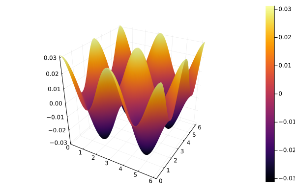

Julia でポアソン方程式を解く
Contents
Julia でポアソン方程式を解く¶
Juliaで、以下のポアソン方程式を周期境界条件で解きます。
\[
\frac{\partial^2 p}{\partial x^2} + \frac{\partial^2 p}{\partial y^2} = \frac{\partial u}{\partial x} + \frac{\partial v}{\partial y}
\]
\[\begin{split}
u = \sin 2 x \\
v = \sin 2 y
\end{split}\]
境界値問題を解くライブラリは、以下の3つを検討しました。
最終的に、ドキュメントにGPUに対応しているとの記載があったKrylov.jlを選択しました。
ライブラリをインポートします。
using Krylov, LinearOperators # to solve Ax=b
using CUDA # for GPU calculation
using BenchmarkTools # to evaluate calculation time
using Plots # to visualize
方程式を離散化するための2次精度中心差分法の関数を作ります。周期境界条件はここで与えます。
function divergence(f1, f2, h)
df1 = 0.5 * (circshift(f1, (-1,0)) - circshift(f1, (1,0))) / h[1]
df2 = 0.5 * (circshift(f2, (0,-1)) - circshift(f2, (0,1))) / h[2]
return df1 + df2
end
function laplacian(f, h)
ddf1 = (circshift(f, (-1,0)) + circshift(f, (1,0)) - 2.0*f) / h[1]^2
ddf2 = (circshift(f, (0,-1)) + circshift(f, (0,1)) - 2.0*f) / h[2]^2
return ddf1 + ddf2
end
laplacian (generic function with 1 method)
分割数、領域サイズ、速度場\(u,v\)を設定します。
nx = ny = 64
lx = ly = 2*pi
shape = (nx, ny)
dx = lx / nx
dy = lx / ny
h = (dx, dy)
x = LinRange(0, lx, nx+1)[1:nx]
y = LinRange(0, ly, ny+1)[1:ny]
u = zeros(nx, ny)
v = zeros(nx, ny)
for j=1:ny
for i=1:nx
u[i,j] = sin(2 * x[i])
v[i,j] = sin(2 * y[j])
end
end
ポアソン方程式を \(Ax=b\) の形で表現します。
\(A\)は\((N_x \times N_y)^2\)の巨大な疎行列になるので、配列ではなくLinearOperatorで与えます。
function poisson_lhs!(ddp_flatten, p_flatten, shape, h)
p = reshape(p_flatten, shape)
ddp_flatten = vec(laplacian(p, h))
end
lhs_ = (ddp_flatten, p_flatten) -> poisson_lhs!(ddp_flatten, p_flatten, shape, h)
b = vec(divergence(u, v, h));
A = LinearOperator(eltype(b), nx*ny, nx*ny, false, false, lhs_)
b_gpu = CuVector(b);
A_gpu = LinearOperator(eltype(b_gpu), nx*ny, nx*ny, false, false, lhs_)
atol = 1e-5
rtol = 1e-5
1.0e-5
Solve and Visualize¶
GMRES method はうまく解けています。Bi-CGSTAB method がNaNを出力する理由がわかりません。
CPU¶
p_flatten, stats = gmres(A, b, atol=atol, rtol=rtol, history=true)
# p_flatten, stats = bicgstab(A, b, atol=atol, rtol=rtol, history=true)
p = reshape(p_flatten, shape)
# print(stats)
surface(x, y, p)

GPU¶
p_flatten, stats = gmres(A_gpu, b_gpu, atol=atol, rtol=rtol, history=true)
# p_flatten, stats = bicgstab(A_gpu, b_gpu, atol=atol, rtol=rtol, history=true)
p_gpu = reshape(p_flatten, shape)
# print(stats)
surface(x, y, Array(p_gpu))
ベンチマーク¶
### CPU
# @benchmark gmres(A, b, atol=atol, rtol=rtol)
### GPU
# @benchmark gmres(A_gpu, b_gpu, atol=atol, rtol=rtol)